育てる事業を考える
強みを生かして、これから育てる事業と投資の方向を考えます。
全国の中堅・中小企業の経営者・後継者へ
次世代経営リデザイン支援
経営・マーケティング・IT。
3人の専門家が、貴社の次の一手を
ひとつの方針にまとめます。
初回相談・診断は無料。ひとつの課題からご相談いただけます。
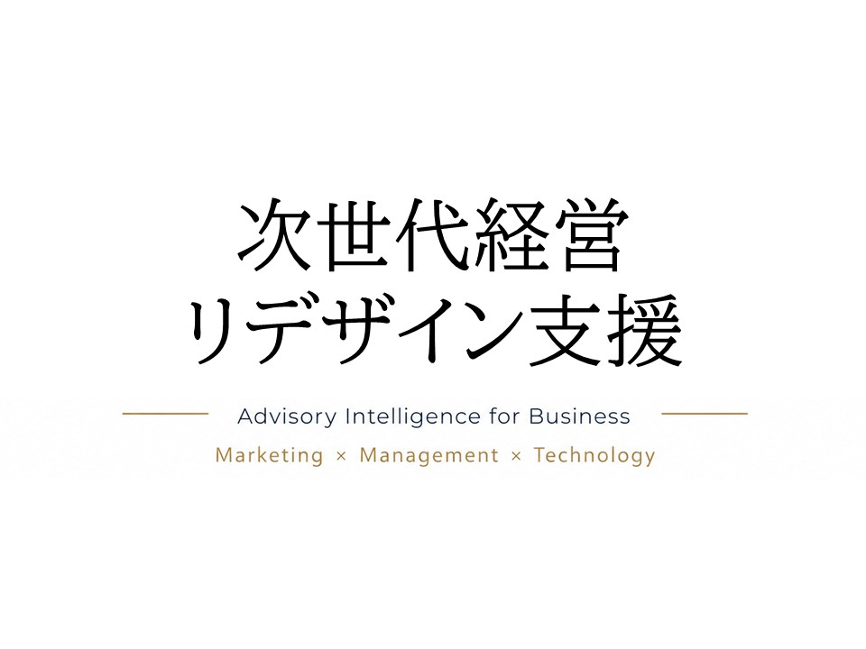
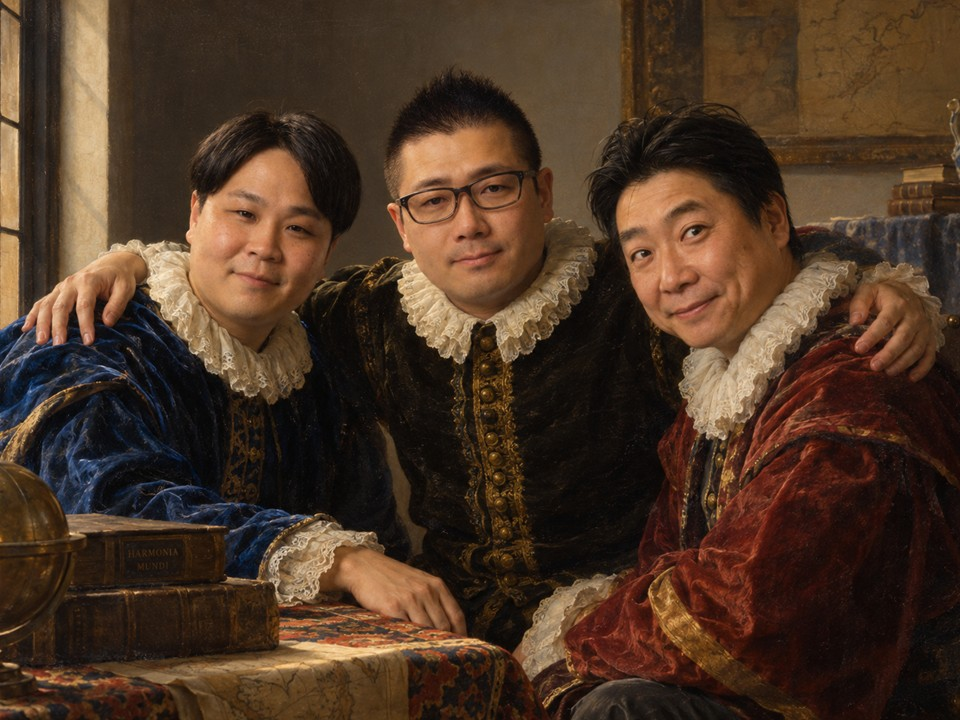
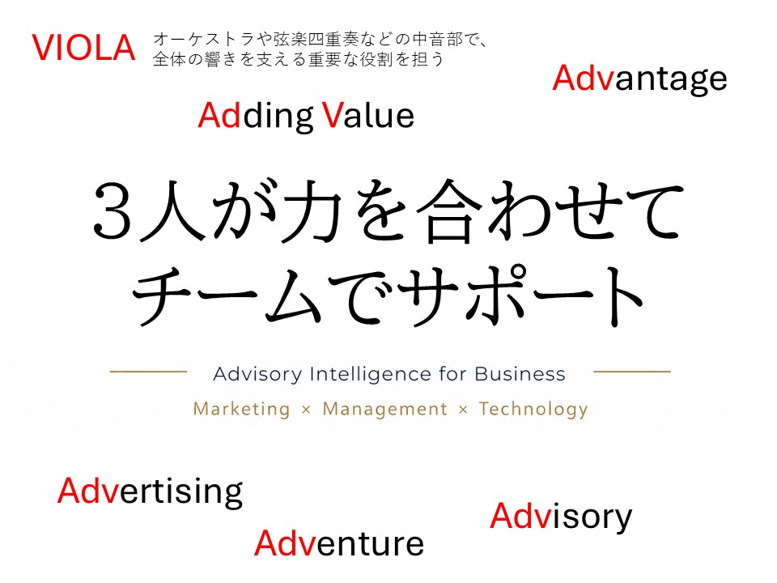
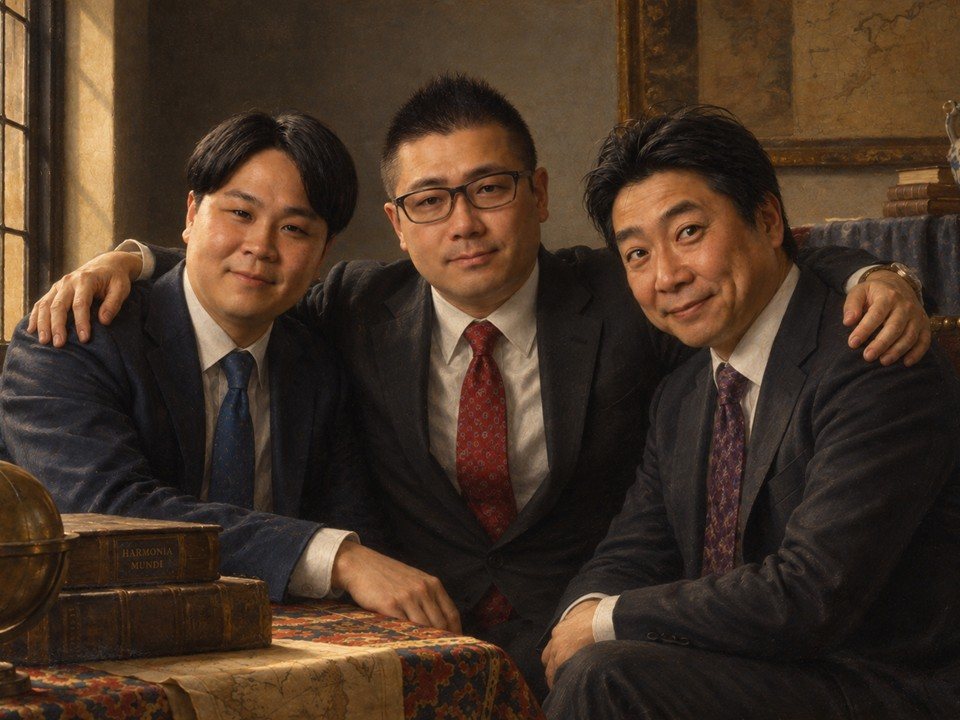
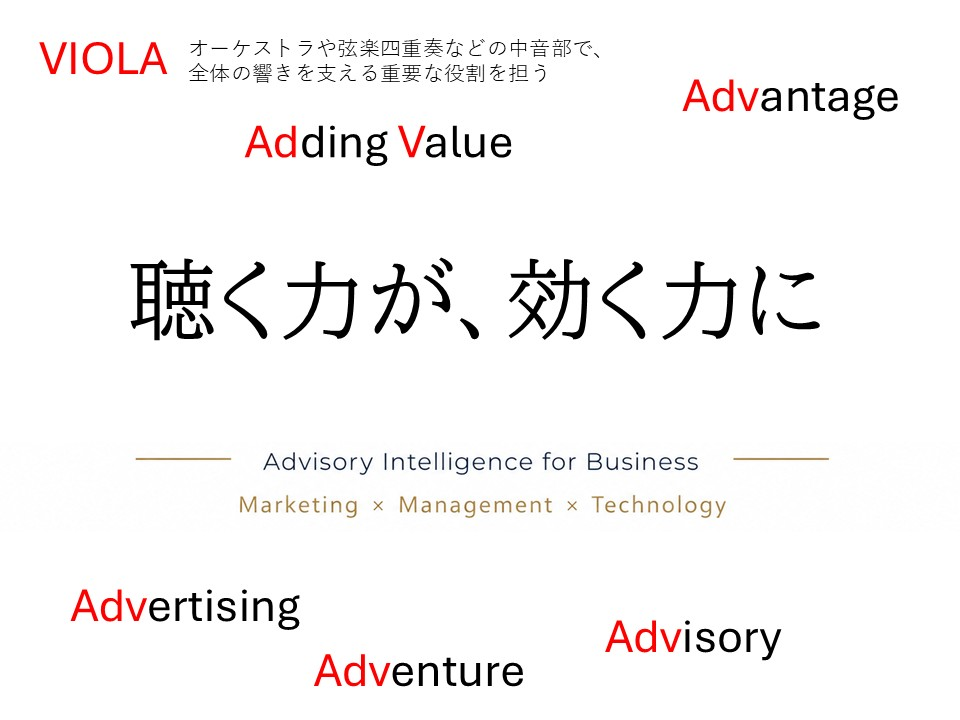

経営者の皆さまへ
会社の強みを受け継ぎながら、次の成長をつくる。
その判断は、ひとつの専門分野だけでは答えを出しにくいものです。
私たちは、経営者の言葉を起点に、経営・マーケティング・ITの視点をつなぎます。
変えるべきことと、守るべきことを一緒に見つけ、実行できる形に整えます。
受け継いできた強みを、これから誰に、どう届けるか。
人が力を発揮できる仕事を、どうつくるか。
目指す会社の姿を共有し、そこへ進むための一歩を一緒に考えます。
強みを生かして、これから育てる事業と投資の方向を考えます。
商品の価値を見つめ直し、次に届けたい顧客と販路を考えます。
属人化した仕事を見直し、人が変わっても続く仕組みを考えます。
大切にしてきたものを理解し、必要な変化には率直に向き合います。
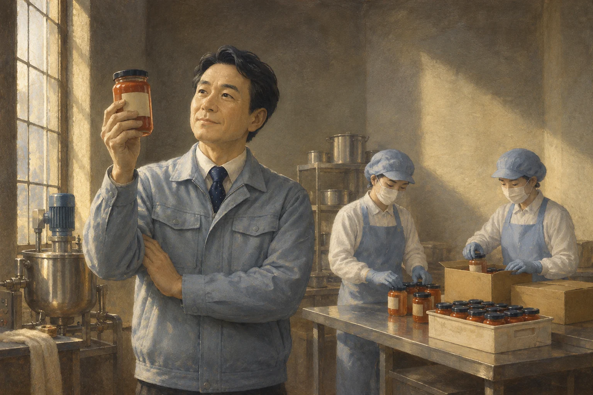
事業の採算と投資の優先順位を整理したい。
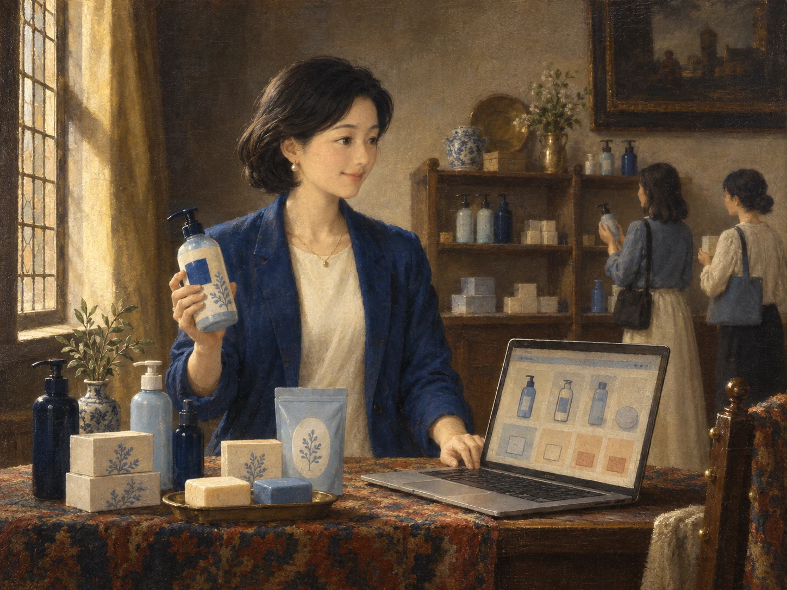
価値を言葉にし、伝え方と売り方を変えたい。
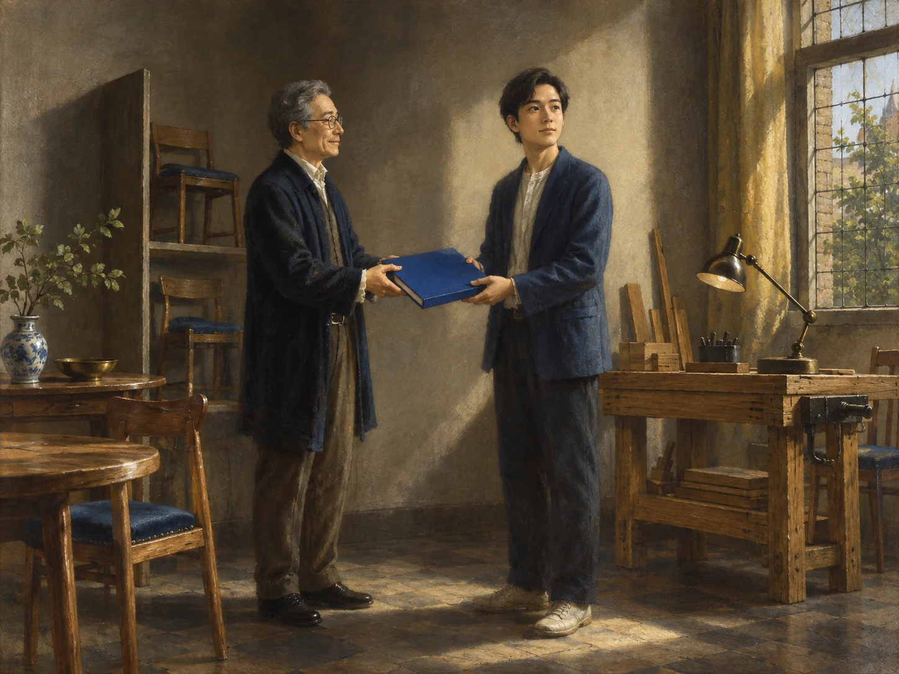
受け継いだ強みを生かし、自分の代で次の成長をつくりたい。
課題のつながり
利益を見直すと、商品の伝え方が変わる。販路を広げると、受注や在庫の仕組みも変わる。
分野ごとに別々の答えを出すと、経営者がその調整役になってしまいます。
必要なのは、個別の正解ではなく、
会社全体を動かす、ひとつの方針。

ひとつの課題から、3つの視点で。必要な専門性を組み合わせます。

01
利益、事業、投資の順番を整理し、実行できる戦略へ。
02
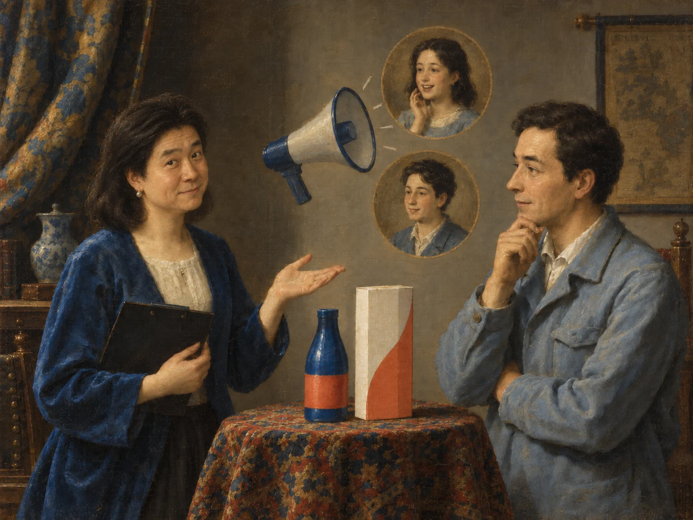
商品の価値を見つめ、選ばれる理由と届け方を形に。
03
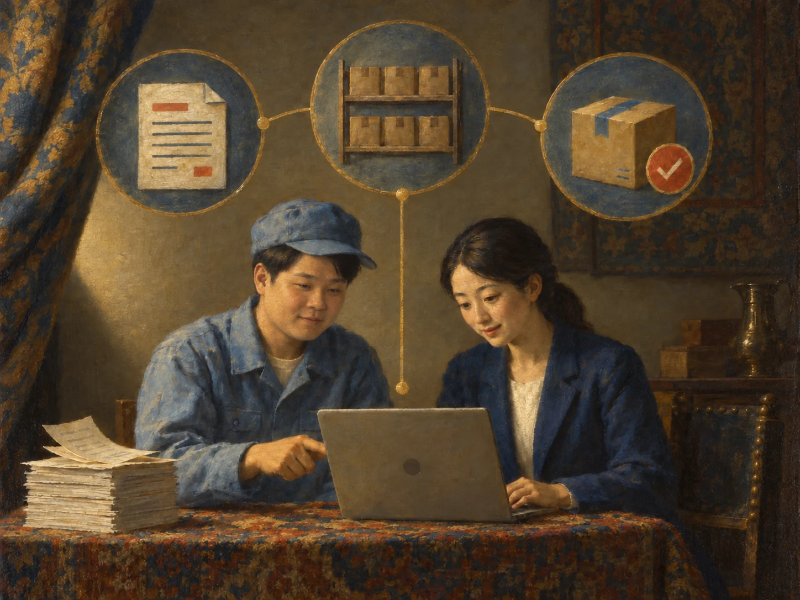
現場の仕事を理解し、続けて使える仕組みと改善へ。
チームで支援する違い
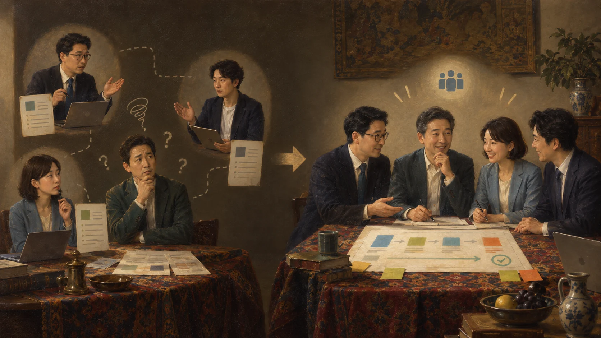
分野ごとに依頼すると
A＆I ADVIOLAなら
メンバー紹介
目の前の相談だけで終わらせず、その背景にある経営課題まで一緒に考えるチームです。
株式会社フィール・ソー・グッド 代表取締役
大手広告会社で国内外のキャンペーンを担当し、2011年に起業。自動車整備工場の経営経験を生かし、ブランド・マーケティングの視点から、課題の発見、企画、実行、進捗管理まで支援します。
株式会社フロントライン・サーバント 代表取締役
中小企業診断士として、経営戦略・事業承継・キャッシュフローの視点から、課題の整理、計画づくり、改善の実行を支援します。
群馬県中小企業診断協会 監事、群馬県働き方改革アドバイザー。事業承継支援マスター、経営革新等認定支援機関、キャッシュフローコーチとしても活動しています。
Yomogit合同会社 代表
株式会社Vecto 代表取締役
大手SIer・IT事業会社・コンサルティングファームで、システム開発・業務改善プロジェクトをリード。ITと業務改善の視点から、課題の整理、設計、開発、導入まで支援します。
気になっていることを整理し、何から取り組むかを一緒に考えます。
売上・利益・商品の伝え方・日々の仕事。どこに課題があるかを整理します。
今、変えること。これから、育てること。優先順位を考えます。
必要な支援と、実行に向けた進め方をご提案します。
ご相談から実行まで
LISTEN
現状や迷いを伺い、目指す未来を共有します。
FIND
3つの視点で、課題のつながりを整理します。
DESIGN
変える順番と、現実的な進め方をご提案します。
DO
合意した計画を、各分野の専門家が伴走します。
問題ありません。「何となく、このままではいけない」という段階から、状況と言葉を一緒に整理します。
必要ありません。3つの視点で全体を確認したうえで、貴社に必要な支援だけをご提案します。
はい。現在の取り組みを尊重し、足りない部分や整理が必要な部分で連携します。
まずは、お話をお聞かせください
初回相談・診断 無料
全国からご相談いただけます。お話を伺い、必要な支援と進め方をご案内します。無理な勧誘は行いません。
制作確認用フォーム
現在は送信先未設定のため、外部には送信されません。